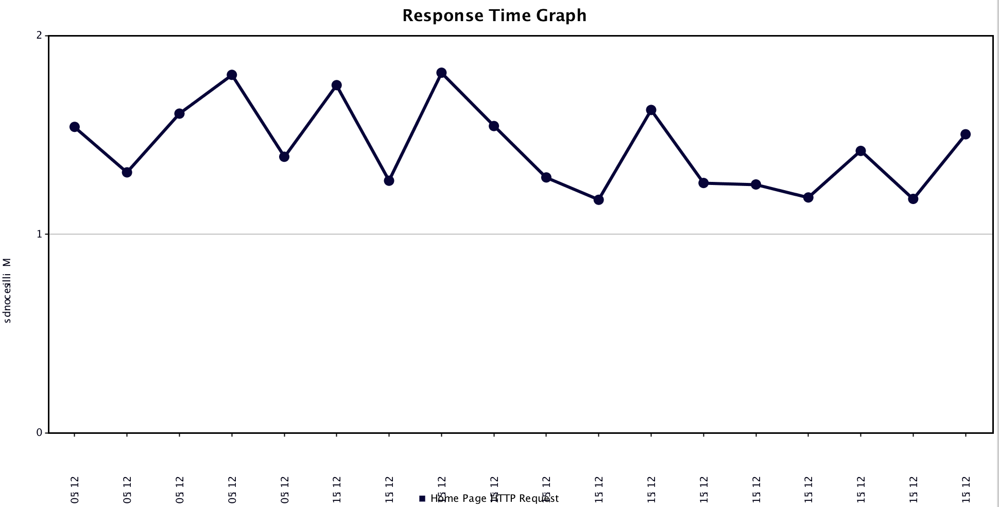

Presented by Luke Stephenson
React to users
The system responds in a timely manner if at all possible.
React to failures
The system stays responsive in the face of failure.
React to load
The system stays responsive under varying workload.
React to events
Reactive Systems rely on asynchronous message-passing to establish a boundary between components that ensures loose coupling, isolation, location transparency, and provides the means to delegate errors as messages.
Should be kept to a minimum to avoid related overheads.
However traditional Java APIs encourage blocking calls which require large numbers of idle threads.
Is java.util.concurrent.Future suitable for Reactive programs?
V get() throws InterruptedException, ExecutionException;
No. Requires a blocking call to Future.get()
Maybe if your future makes callbacks (but it's not composable).
Is scala.concurrent.Future suitable for Reactive programs?
def map[S](f : scala.Function1[T, S])
(implicit executor : scala.concurrent.ExecutionContext)
: scala.concurrent.Future[S]
Yes. Specifies how to react when the Future completes.
Is java.io.InputStream suitable for Reactive programs?
public int read() throws IOException;
No. Requires a blocking call to InputStream.read()
Java 'Servlet' container. How many Threads by default?
200!
Hiding inefficiencies to be discovered later.
Rails is the same (blocking model - multiple processes vs multiple threads)
Lightweight reactive web application framework. How many Threads by default?
One per processor
A website with an index page and a REST API which processes large uploads.
Demo
(Press down for screenshots if offline - TODO)
1300 per second (my macbook)
Upload - Took 124 seconds to complete
Highly inefficient. Not resilient to changes in load. More threads could be added, but this has knock on effects.
But first a few concepts
A component feeding back to it's caller that it can't keep up so that the caller can respond appropriately.
Providing a callback, allows reacting to an event
The play framework provides some abstractions to perform reactive stream processing
Consumer
// an iteratee that consumes Array[Byte] chunks and produces an Int
Iteratee[Array[Byte],Int]
def fold[B](folder: Step[E, A] => Future[B]): Future[B]
object Step {
case class Cont[E, +A](k: Input[E] => Iteratee[E, A]) extends Step[E, A]
case class Done[+A, E](a: A, remaining: Input[E]) extends Step[E, A]
case class Error[E](msg: String, input: Input[E]) extends Step[E, Nothing]
}
Producer - push data into iteratees
Transformer - Eg transform an producer of Strings into a producer of Ints
Demo
(Press down for screenshots if offline - TODO)
1300 per second (my macbook)
Upload - Took 36 seconds to complete
- Presentation built with reveal.js
Thanks - The End.